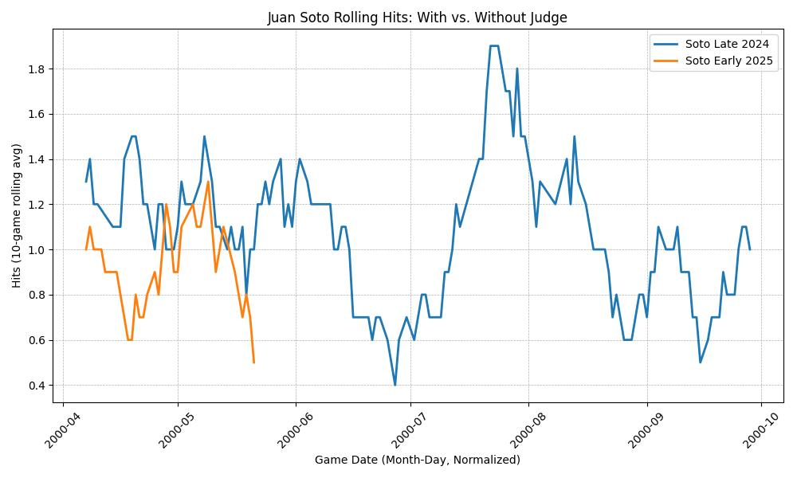

The Soto–Judge Effect isn’t just about one player’s performance—it’s about the chess game of baseball. Juan Soto’s hits surged with Aaron Judge behind him because pitchers were forced to play fair. Without Judge, they could dodge, weave, and walk Soto at will.
Figure: The Soto–Judge Effect in action—hits soar with Judge (blue), dip without him (orange).
This analysis shows that baseball is more than raw talent—it’s a game of systems, strategy, and synergy. The Soto–Judge Effect is a reminder: even the best players need the right environment to shine.
It’s not about decline. It’s about design.